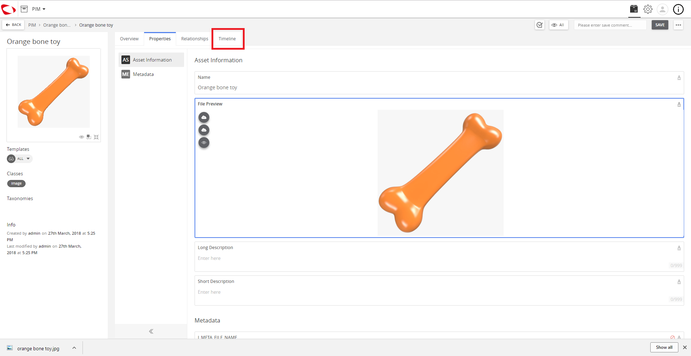
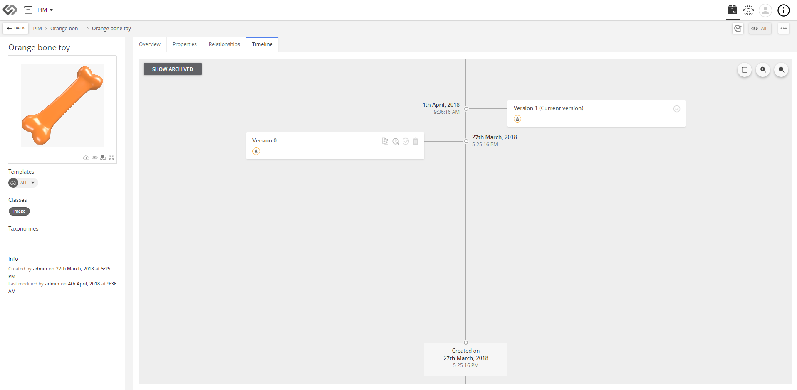

Retour arrière¶
La fonctionnalité de retour arrière permet à l’utilisateur de basculer vers (ou revenir à) une version antérieure d’un produit dans le système.
| Terme clé |
|
| Description: |
|
| Related topics: | |
| Application: |
|
Marche à suivre : Retour arrière¶
Pour ce faire, procédez comme suit:
- Allez à PIM.

- Cliquez pour sélectionner le produit pour lequel vous souhaitez exécuter un retour en arrière (dans cette démonstration, nous sélectionnons « Jouet orange en forme d’os »).
- Cliquez sur l’onglet Relations.

- Dans cette démonstration, nous allons remplacer l’image et revenir à l’image précédente.


- Cliquez sur ENREGISTRER SOUS pour enregistrer les modifications apportées au produit.

- Allez à l’onglet Relation.
- Allez à l’onglet Chronologie. La version actuelle du produit serait celle qui porte le numéro de la dernière version en haut.

- Cliquez sur la version antérieure au remplacement de l’image (dans cette démonstration, nous avons sélectionné « version 0 27 mars 2018 »).

- Une fois le retour en arrière confirmé, l’onglet Relation s’ouvre et la relation est restaurée. Vous pouvez voir l’image (revenue à l’ancienne version).

Last updated: May 09, 2018